4 Papers are accepted by ICML 2026.
Data-Centric AI · LLM Data Systems · AI4Science
Data-Centric AI · LLM Data Systems · AI4Science
面向下一代模型的Data-centric AI基础设施 Data-centric AI infrastructure for next-generation models
张文涛，北京大学国际机器学习研究中心助理教授、研究员、博士生导师，Data-Centric AI Group 负责人。研究聚焦以数据为中心的人工智能、LLM 数据系统、数据治理智能体、数据驱动训练、GraphRAG 和 AI4Science。
他主持国家自然科学基金重大研究计划项目、科技部重点研发计划项目（课题）、教育部学科突破先导项目（Co-PI）。曾任职于腾讯机器学习平台部、Apple AIML 和加拿大 Mila 人工智能实验室，博士毕业于北京大学并师从崔斌教授。近五年在 ICML、NeurIPS、ICLR、SIGKDD、WWW、SIGMOD、VLDB、ICDE 等 CCF-A 顶会/顶刊以第一或通讯作者发表论文 100 余篇，并获得多个最佳论文奖。
课题组构建 DataFlow、MinerU、MinerU-HTML、DataFlex、AgentFlow、OpenWorldLib、One-Eval、Paper2Any 等开源系统，将数据解析、合成、处理、评估、训练调度和智能体工作流变成可复用的 AI 基础设施。
Wentao Zhang is an Assistant Professor and PhD Advisor at Peking University, leading the Data-Centric AI Group. His research focuses on Data-Centric AI, LLM data systems, data agents, data-aware training, GraphRAG, and AI4Science.
He leads national-level projects from NSFC, the Ministry of Science and Technology, and the Ministry of Education. Before joining PKU, he worked at Tencent's ML Platform Department, Apple AIML, and Mila, and received his PhD from PKU under Prof. Bin Cui. In recent years, he has published 100+ CCF-A papers as first or corresponding author in ICML, NeurIPS, ICLR, SIGKDD, WWW, SIGMOD, VLDB, and ICDE, with multiple best paper awards.
The group builds open systems including DataFlow, MinerU, MinerU-HTML, DataFlex, AgentFlow, OpenWorldLib, One-Eval, and Paper2Any, turning data parsing, synthesis, processing, evaluation, training orchestration, and agent workflows into reusable AI infrastructure.
研究主线Research
Data-Centric AI、LLM、AI Systems、AI4Science。
Data-Centric AI, LLMs, AI systems, and AI4Science.
主持项目Grants
国家自然科学基金重大研究计划、科技部重点研发计划、教育部学科突破先导项目。
NSFC Major Research Plan, MOST key R&D project, and MOE disciplinary breakthrough project.
荣誉与论文奖Honors & awards
智源学者、浦江青年学者、电子学会科技进步一等奖、世界人工智能大会云帆奖、ACM SIGMOD 中国新星奖、世界互联网大会领先科技成果奖、华为火花奖等。
Zhiyuan Scholar, Pujiang Young Scholar, CIE Science and Technology Progress Award, WAIC Rising Star, ACM SIGMOD China Rising Star, World Internet Conference leading achievement, Huawei Spark Award, and more.
学术影响力Academic impact
获 WWW'22、APWeb'23、CIKM'24 等顶会最佳论文奖，DataFlow、MinerU、Angel 等开源Data Infra累计获 GitHub Star 超 7 万。
Best paper awards at WWW'22, APWeb'23, and CIKM'24; open-source Data Infra systems including DataFlow, MinerU, and Angel have accumulated 70k+ GitHub stars.
100+近五年 CCF-A 论文CCF-A papers in recent years
#1CSRankings PKU AI 以及 AI+Data 方向在职教师第一#1 PKU faculty in AI and AI+Data on CSRankings
70k+开源项目累计 GitHub StarsGitHub stars across open-source projects
3+43+43项顶会最佳论文奖与主持4项国家级项目3 top-conference best paper awards and 4 national-level grants as PI
研究方向Research
围绕下一代模型的数据基础设施Data infrastructure for next-generation models
Data-Centric AI
从大语言模型、多模态大模型，到 Agentic LLM 与 World Model，我们持续布局 Data Infra，目标是以更低成本、更低门槛和更高质量完成数据获取、解析、合成、清洗、评估与训练调度，让 Data-Centric AI 成为下一代模型能力增长的基础设施。
From LLMs and multimodal foundation models to agentic LLMs and world models, we continuously build Data Infra for lower-cost, lower-barrier, and higher-quality data acquisition, parsing, synthesis, cleaning, evaluation, and training orchestration, making Data-Centric AI a core infrastructure layer for next-generation model capabilities.
近期动态Recent news
近期动态Recent updates
102 updates
3 篇论文被 SIGKDD 2026 接收：RARE: Retrieval-Augmented Reasoning Modeling、Dripper: Token-Efficient Main HTML Extraction with a Lightweight LM、ProfiliTable: Profiling-Driven Tabular Data Processing via Agentic Workflows。
Three papers are accepted by SIGKDD 2026: RARE: Retrieval-Augmented Reasoning Modeling, Dripper: Token-Efficient Main HTML Extraction with a Lightweight LM, and ProfiliTable: Profiling-Driven Tabular Data Processing via Agentic Workflows.
1 篇论文被 VLDB 2026 接收：QA-GraphRAG: Query-Adaptive Plug-and-Play Retrieval Integration for Graph-based Retrieval-Augmented Generation。
One paper is accepted by VLDB 2026: QA-GraphRAG: Query-Adaptive Plug-and-Play Retrieval Integration for Graph-based Retrieval-Augmented Generation.
1 Papers is accepted by ACL 2026 Industry Track.
11 Papers are accepted by ACL 2026 Findings.
8 Papers are accepted by ACL 2026 MainConference.
获评 浦江青年学者。
Awarded Pujiang Young Scholar.
Two Papers are accepted by ICDE 2026.
Five Papers are accepted by CVPR 2026.
获评 智源学者。
Awarded Zhiyuan Scholar.
博士生徐铭浩获 腾讯青云奖学金。
PhD student Minghao Xu received the Tencent Qingyun Scholarship.
Six Papers are accepted by ICLR 2026.
Two Papers are accepted by WWW 2026.
One Paper is accepted by SIGKDD 2026.
Two Papers are accepted by AAAI 2026.
Seven Papers are accepted by NeurIPS 2025.
Six Papers are accepted by EMNLP 2025.
🏆 We win the First Place Winner in ICML 2025 Challenges on Automated Math Reasoning and Extensions!
Five Papers are accepted by ACM MM 2025.
Two Papers are accepted by ICCV 2025.
One Paper is accepted by VLDB 2025.
One Paper is accepted by ECML 2025.
Six Papers are accepted by ACL 2025 Main.
One Paper is accepted by ACL 2025 Findings.
Three Papers are accepted by SIGKDD 2025.
One Paper is accepted by IEEE TKDE 2025.
Two Papers are accepted by ICML 2025.
One Paper is accepted by IJCAI 2025.
One Paper is accepted by ISSTA 2025.
One Paper is accepted by SIGIR 2025.
One Paper is accepted by ISSTA 2025.
Two papers are accepted by CVPR 2025.
One paper is accepted by ICDE 2025.
Two papers are accepted by IEEE TKDE 2025.
Four papers are accepted by ICLR 2025.
Two papers are accepted by ICDE 2025.
Two papers are accepted by WWW 2025.
One papers is accepted by VLDB 2025.
Two papers are accepted by AAAI 2025.
Two papers are accepted by ICDE 2025.
🏆 We win the Best Student Full Paper Award in CIKM 2024!
One paper is accepted by IEEE BIBM 2024.
Three papers are accepted by NeurIPS 2024.
One paper is accepted by CIKM 2024.
One paper is accepted by VLDB 2024.
One paper is accepted by SIGKDD 2024.
One paper is accepted by the main track of ACL 2024.
One paper is accepted by ICML 2024.
One paper is accepted by JMLR 2024.
One paper is accepted by TKDE 2024.
Four papers are accepted by ICDE 2024.
I am awared First Prize of Scientific and Technological Progress Award of CIE due to the Angel Project.
One paper is accepted by VLDB 2024.
One paper is accepted by SIGMOD 2024.
I am awared 2023 CAAI Doctoral Dissertation Award.
One paper is accepted by WWW 2024.
One paper is accepted by ACM Computing Survey 2024.
Two papers are accepted by ICLR 2024.
One paper is accepted by AAAI 2024.
I am awared 2023 Beijing Doctoral Dissertation Award.
Three papers are accepted by ICDE 2024.
One paper is accepted by ICDE 2024.
🏆 We win the Best Paper Runner Up Award in APWeb-WAIM 2023.
One paper is accepted by ACM Computing Survey 2023.
One paper is accepted by NeurIPS 2023.
One paper is accepted by VLDB 2024.
One paper is accepted by APWEB-WAIM 2023.
One paper is accepted by CIKM 2023.
Our book about Diffusion Model is now avaliable.
One paper is accepted by TKDE 2023.
One paper is accepted by SIGKDD 2023.
One paper is accepted by VLDB 2023.
One paper is accepted by SIGMOD 2023.
One paper is accepted by AAAI 2023.
One paper is accepted by ICDE 2023.
One paper is accepted by VLDBJ 2022.
One paper is accepted by NeurIPS 2022.
获世界人工智能大会 云帆奖-明日之星，2022。
Awarded Rising Star at the World AI Conference, 2022.
I am honor to present the valedictorian for the class of 2022 in CS of PKU.
I receive my Ph.D. degree in computer science from Peking University with Outstanding Doctoral Dissertation Award.
One paper is accepted by the journal VLDBJ 2022.
Four papers are accepted by the conference SIGKDD 2022.
Two papers as first author, have been accepted by ICML 2022.
One paper related to AutoML, has been accepted by Bioinformatics 2022.
🏆 We win the Best Student Paper Award in WWW 2022 !
We release our first version of the scalable graph learning toolkit--SGL.
One paper is selected as the Best Paper Award Nominees in WWW 2022. The corresponding PasCa system (integrated into SGL) will be open source next month!
One paper as corresponding author, related to GNN-based Recommendation, has been accepted by the journal ACM Computing Survey 2022 .
One paper related to graph-based recommendation, has been accepted by the conference ICDE 2022 .
One paper as first author, related to graph data annotation, has been accepted by the conference ICLR 2022 .
One paper related to our large scale Hyper-paramater Tuning system, has been accepted by the conference VLDB 2022 .
I accepted the invitation to serve as Program Committee member of the Research Track of ACM SIGKDD 2022.
One paper as first author, related to our scalable graph NAS system, has been accepted by the conference WWW 2022 .
Our OpenBox team won the “Outstanding Winner” at the openGCC contest in CCF ChinaSoft 2021. Congratulations!
Two papers as first author, related to scalable graph learning and graph data annotation, have been accepted by the conference NeurIPS 2021 with Spotlight (< 3%).
We propose GAMLP, a scalable and efficient graph model, which achieves the top #1 performance in three public and largest ogbn graphs (i.e., ogbn-papers100M, ogbn-products, and ogbn-mag)! See the leaderboards here.
One paper as first author, related to large-scale graph data selection, has been accepted by the conference VLDB 2021.
One paper as co-first author, related to deep GNN, has been accepted by the journal TKDE 2021.
One paper as third author, related to our AutoML system -- VocalnoML, has been accepted by the conference VLDB 2021.
Three papers, related to sparse graph, graph decomposition and our blackbox optimization (BBO) system -- OpenBox, are accepted by the conference SIGKDD 2021.
As the only person in China, I was supported by the Apple Scholars in AI/ML PhD fellowship. Many thanks to Apple!
One paper as first author has been accepted by the conference SIGMOD 2021. Looking forward to the meeting in Xi'an this summer!
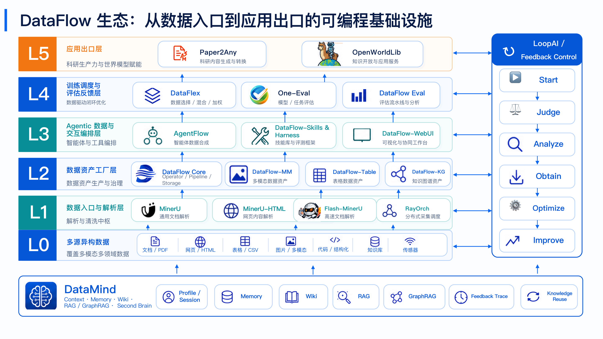
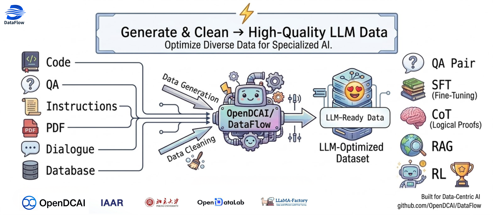
DataFlow
大模型数据准备系统，包含数据获取、处理、质量评估、算子和工作流编排。
LLM data preparation with acquisition, processing, quality evaluation, operators, and workflows.
MinerU
通用文档解析引擎，将 PDF、图片和复杂版面转换为 AI-ready 文档数据。
General document parsing that converts PDFs, images, and complex layouts into AI-ready document data.
MinerU
HTML
HTML
MinerU-HTML
基于轻量语言模型的网页主内容抽取工具，服务高质量 HTML 数据清洗。
Lightweight-LM main-content extraction for high-quality HTML data cleaning.
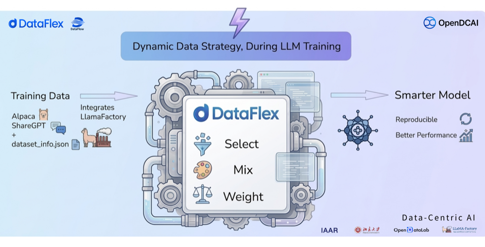
DataFlex
训练过程中动态选择、配比和重加权数据的 Data-centric LLM 训练框架。
Data-centric LLM training with dynamic selection, mixture, and reweighting.
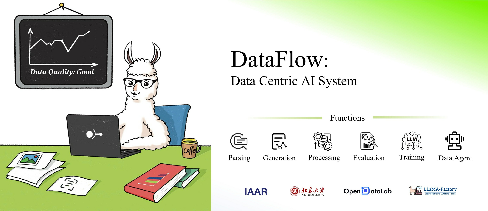
DataFlow-MM
DataFlow 的多模态扩展，覆盖图像、视频、音频等数据资产的处理与评测。
The multimodal extension of DataFlow for image, video, audio, and related data assets.
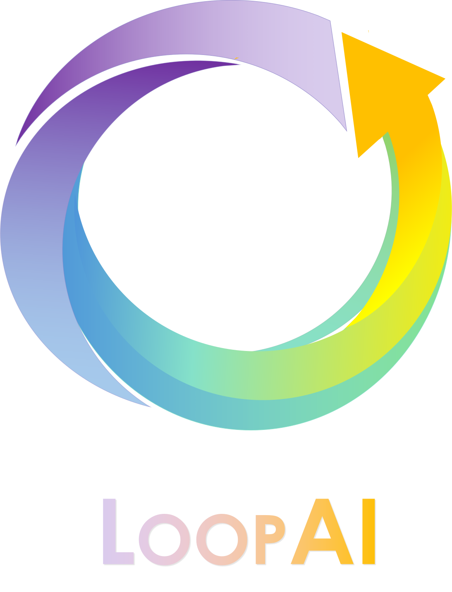
DataFlow-LoopAI
面向大模型的闭环优化框架，从评测、问题分析到数据获取和训练反馈。
Closed-loop LLM optimization from evaluation and failure analysis to data acquisition and feedback.
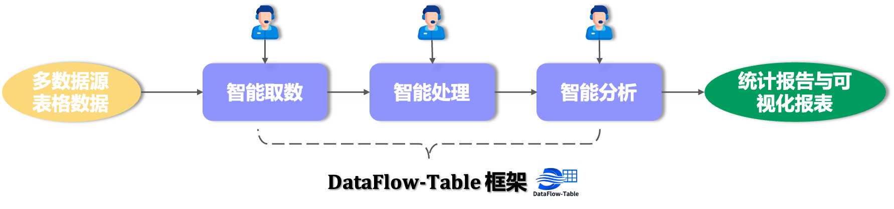
DataFlow-Table
自动化表格数据处理框架，覆盖取数、处理和分析三类 Agentic Workflow。
Agentic workflows for table extraction, processing, and analysis.
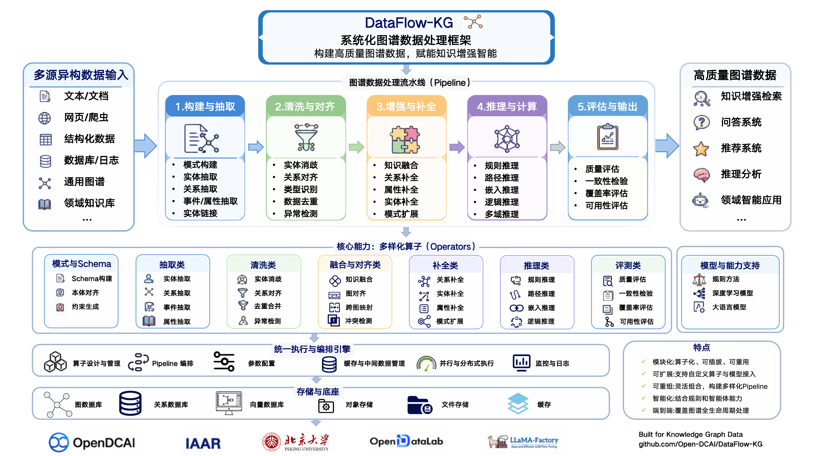
DataFlow-Graph
面向知识图谱数据处理的 DataFlow 扩展，支持图谱构建、补全、推理与评测。
DataFlow extension for knowledge graph construction, enrichment, reasoning, and evaluation.
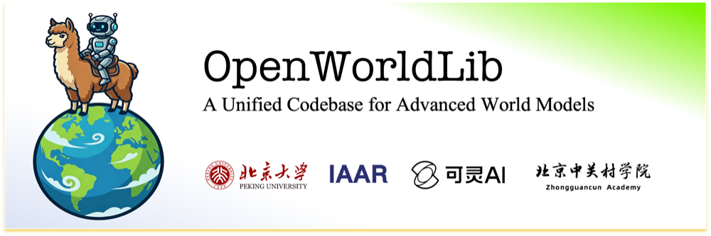
OpenWorldLib
将 DataFlow 扩展到 World Model 场景，支持世界模型数据准备与评估。
Extends DataFlow to world-model data preparation and evaluation.
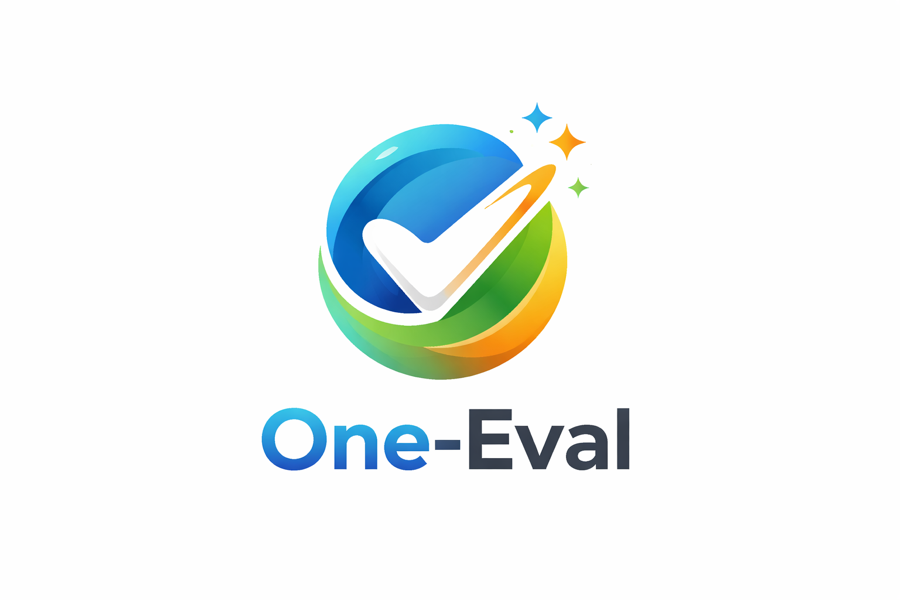
One-Eval
自动化评测框架，目标是一句话从用户需求到模型评测报告。
Automated LLM evaluation from natural-language needs to model reports.
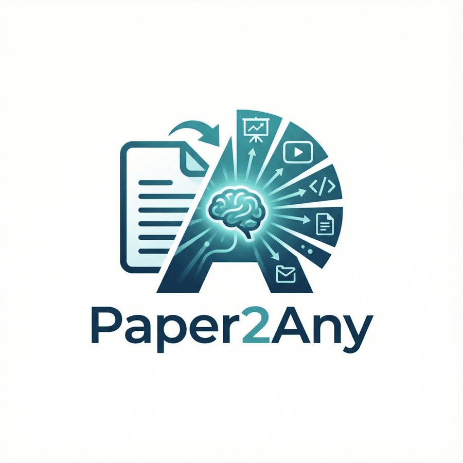
Paper2Any
基于 DataFlow-Agent 搭建的科研资产生成应用，支持科研绘图、PPT、海报等。
Research asset generation for figures, slides, posters, and related workflows.
AgentFlow
首个包含 RAG、MM-RAG、DeepResearch、Code、GUI 等多环境的 Agent 数据合成框架。
Agent data synthesis across RAG, MM-RAG, DeepResearch, Code, GUI, and more.
DataFlow
Skills
Skills
DataFlow-Skills
面向 DataFlow 生态的可复用技能库，把数据算子、流程生成和质量评测沉淀成可组合能力。
A reusable skill library for the DataFlow ecosystem, packaging data operators, workflow generation, and quality evaluation as composable capabilities.
MemOS
面向大模型与智能体的 Memory OS，统一长期记忆的存储、检索、管理与个性化调用。
A Memory OS for LLMs and agents, unifying long-term memory storage, retrieval, management, and personalization.
Angel
腾讯与北大联合设计的高性能分布式机器学习与图计算平台。
A high-performance distributed machine learning and graph computing platform.
著作Books
数据与生成式 AI 系列著作Books on data and generative AI
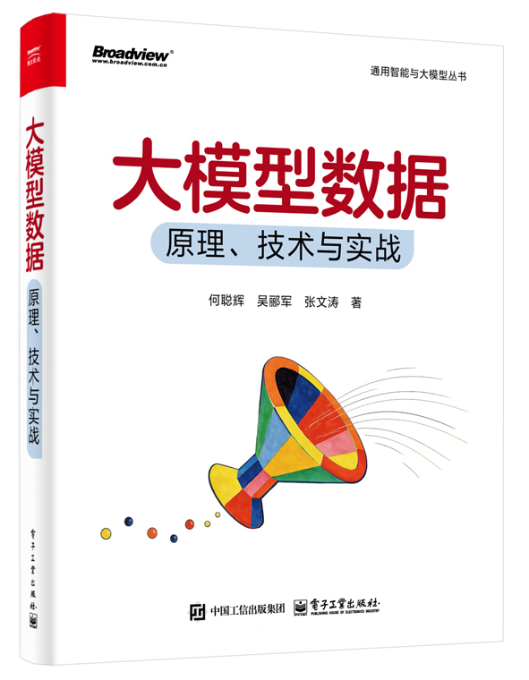
大模型数据：原理、技术与实战LLM Data: Principles, Technologies, and Practice
系统介绍大模型数据全生命周期管理，覆盖数据获取、清洗解析、标注、合成增强、质量评估、合规安全，以及 PDF 数据垂类模型微调实践。
A systematic book on the lifecycle of LLM data, covering acquisition, cleaning and parsing, annotation, synthesis, quality evaluation, compliance, safety, and PDF-data fine-tuning practice.
查看图书页面View book page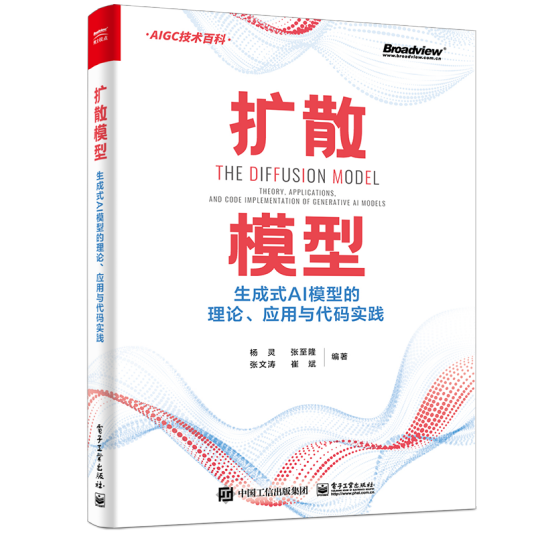
扩散模型：生成式 AI 模型的理论、应用与代码实践Diffusion Models: Theory, Applications, and Code Practice
面向生成式 AI 与扩散模型的理论、应用和代码实践，介绍扩散模型基础、典型生成任务与前沿应用。
A book on diffusion-model theory, applications, and code practice for generative AI, covering foundations, representative generation tasks, and frontier applications.
查看图书页面View book page论文发表Publications
论文云图、全量文章与代表论文Topic cloud, all publications, and featured papers
Filter by keyword:
全部论文窗口
All Publications Window
代表性项目论文Representative project papers
课题组优势Group strengths
支持学生形成论文、开源和产业影响力Supporting students across papers, open source, and industrial impact
1. 研究方向1. Research directions
- DCAI 和大模型都是学术界/工业界前沿。
- 善于发现有影响力和现实意义、但 under-explored 的研究问题，避免内卷。
- DCAI and large models sit at the frontier of both academia and industry.
- The group values impactful, practically meaningful, and under-explored research problems.
2. 学生指导2. Student mentoring
- 每周按小方向组会分享和讨论，线下静园六院 208，线上腾讯会议。
- 安排经验丰富的师兄师姐带入门，遇到问题随时讨论。
- 根据每位学生的基础、兴趣和未来规划制定培养方案，一对一指导。
- Weekly subgroup meetings are held offline at Jingyuan Courtyard 6 and online via Tencent Meeting.
- Senior students help newcomers get started, with frequent discussions whenever problems arise.
- Mentoring plans are tailored to each student's background, interests, and future goals.
3. 合作资源3. Collaboration resources
- 丰富计算资源，如千卡规模 H20/H100/H200 算力集群。
- Apple AIML、腾讯混元、华为、上海 AI Lab、字节 Seed、快手可灵、阿里 Qwen、MSRA、蚂蚁等 Research 实习和工作推荐。
- Mila、Stanford、ETH、HKUST、NUS、UQ 等学术合作与交流机会。
- Strong computing resources, including large-scale H20/H100/H200 GPU clusters.
- Research internship and career referrals across Apple AIML, Tencent Hunyuan, Huawei, Shanghai AI Lab, ByteDance Seed, Kuaishou Kling, Alibaba Qwen, MSRA, Ant Group, and more.
- Academic collaboration and exchange opportunities with Mila, Stanford, ETH, HKUST, NUS, UQ, and other partners.
4. 成长支持4. Career support
- 助研津贴、推荐信、优先保送本课题组硕博机会。
- 叉院 PhD 住宿和工位在校本部燕园校区。
- 组内氛围融洽，定期组织徒步、羽毛球、聚餐等团建，自愿参加。
- Research assistant support, recommendation letters, and priority opportunities for master's and PhD paths within the group.
- PhD students in the School of Intelligence Science and Technology have housing and workspace on PKU's main Yanyuan campus.
- The group keeps a friendly culture with optional hiking, badminton, meals, and other activities.
致有志于 AI 研究的学生
For students interested in AI research
在当前高度竞争的 AI 人才生态中，无论是工业界顶尖计划，还是学术界 Top 课题组博士招生与教职聘任，核心竞争力已从“论文数量”转向“综合影响力”。我会从以下五个维度支持你的成长。
In today's competitive AI ecosystem, long-term competitiveness comes from integrated research impact rather than paper count alone. The group supports students across the following five dimensions.
聚焦真实需求与产业趋势，避免内卷赛道，例如 LLM Data、Data-Centric AI、数据智能体等方向。
We focus on real needs and industry trends, including LLM data, Data-Centric AI, and data agents.
CCF-A 顶会论文仍是重要门槛，但更看重工作是否被引用、被主流开源项目采纳、解决关键问题。
Top-tier papers remain important, but we care more about whether work is cited, adopted, and solves key problems.
主导或深度参与高星开源项目，建立工程与研究能力、形成个人品牌，围绕核心项目构建研究骨架。
Students can lead or deeply contribute to high-impact open-source projects and build a research agenda around core systems.
鼓励学生进入头部企业或研究院实习，在真实场景、海量数据和强大算力中锤炼问题定义能力。
Students are encouraged to intern at leading companies and labs, learning from real scenarios, large-scale data, and strong compute.
课题组的学术网络、合作资源和学校平台将直接影响科研效率、合作机会与职业出口。
The group's academic network, collaborations, and PKU platform support research efficiency, opportunities, and career outcomes.
深度合作伙伴与学生实习平台
Close partners and internship platforms
学生目前主要在以下企业、研究院和联合培养平台参与研究实习、项目合作与联合培养。
Students mainly participate in research internships, project collaborations, and joint training through the following companies, research institutes, and platforms.
 微软 MSRA
微软 MSRA加入我们Join us
欢迎博士生、博士后和研究实习生Openings for PhD students, postdocs, and research interns
PhD / Master
依托北京大学国际机器学习研究中心招收博士生，也依托上海 AI Lab、北京中关村学院等平台招收联培博士生。申请 2027 年秋季入学博士/硕士的学生，建议先联系实习。
- 支持 CCF-A 顶会论文训练，但更强调工作的影响力、开源采纳和解决关键问题。
- 围绕核心开源项目构建研究骨架，避免碎片化。
PhD and master students are welcome through PKU CMLR and joint programs with Shanghai AI Lab and Beijing Zhongguancun Academy. Students applying for Fall 2027 are encouraged to start with an internship.
- Top-tier paper training is supported, with emphasis on real impact, open-source adoption, and key problems.
- Research is organized around core open-source systems rather than fragmented topics.
Postdoc
长期招收博士后，与北京大学鄂维南院士和崔斌教授联合培养，方向包括大模型数据、Data-Centric AI、AI4Science 和智能体系统。
Long-term postdoc openings are available in LLM data, Data-Centric AI, AI4Science, and agent systems, jointly mentored with Prof. Weinan E and Prof. Bin Cui.
Research Intern
长期招收研究实习生，可远程/校外实习。适合希望参与 CCF-A 论文、开源系统建设、真实产业数据问题和科研产品化的学生。
- 参与 DataFlow、MinerU、DataFlex、AgentFlow、Paper2Any 等系统。
- 工业界研究实习和头部企业/研究院资源推荐。
- 联系 wentao.zhang@pku.edu.cn 或微信 z1299799152。
Research interns are welcome year-round, including remote interns. This is suitable for students who want to work on CCF-A papers, open-source systems, real data problems, and research products.
- Projects include DataFlow, MinerU, DataFlex, AgentFlow, Paper2Any, and related systems.
- Research internship and referral resources are available across leading companies and labs.
- Contact wentao.zhang@pku.edu.cn or WeChat z1299799152.
奖项与服务Awards & Service
代表性荣誉 / 学术组织兼职与服务Selected Awards / Academic Service
代表性荣誉Selected Awards
- 浦江青年学者Pujiang Young Scholar, 2026.
- 智源学者Zhiyuan Scholar, 2026.
- ACM SIGMOD 中国新星奖ACM SIGMOD China Rising Star Award, 2025.
- 高科技创新计划青年人才支持项目High-Tech Innovation Program Young Talent Support Project, 2025.
- 华为火花奖Huawei Spark Award, 2025.
- CIKM 2024 最佳学生长文奖Best Student Full Paper Award, CIKM 2024.
- 北京大学未名青年学者Weiming Young Scholar, Peking University, 2024.
- 中国电子学会科技进步一等奖First Prize of Scientific and Technological Progress Award, CIE, 2023.
- 中国人工智能学会优秀博士学位论文奖CAAI Outstanding Doctoral Dissertation Award, 2023.
- 北京市优秀博士学位论文奖Beijing Outstanding Doctoral Dissertation Award, 2023.
- APWeb-WAIM 2023 最佳论文亚军奖Best Paper Runner Up Award, APWeb-WAIM 2023.
- 世界人工智能大会云帆奖World AI Conference Rising Star, 2022.
- WWW 2022 最佳学生论文奖WWW 2022 Best Student Paper Award.
- IVADO 博士后奖学金，加拿大IVADO Postdoctoral Fellowship, Canada.
- 北京大学优秀博士学位论文奖PKU Outstanding Doctoral Dissertation Award, 2022.
- 北京市优秀毕业生Outstanding Graduate of Beijing, 2022.
- 世界互联网大会 / 数博会领先科技成果奖World Internet Conference / Big Data Expo Leading Technology Achievement Award, 2022.
- 北京市三好学生Merit Student of Beijing, 2021.
- Apple 博士生奖学金Apple PhD Fellowship, 2021.
学术组织兼职与服务Academic Appointments and Service
1. 中国计算机学会（CCF）1. China Computer Federation (CCF)
CCF 数据库专委会执行委员；CCF 软件工程专委会执行委员。
Executive member, CCF Technical Committee on Databases; Executive member, CCF Technical Committee on Software Engineering.
2. 中国中文信息学会2. Chinese Information Processing Society of China
社会媒体处理专业委员会执行委员。
Executive member, Technical Committee on Social Media Processing.
3. 国际学术会议主席3. International Conference Chairing Roles
Tutorial & Workshop Chair: ADC 2024；领域主席 Area Chair: WWW 2025-2026, NeurIPS 2025-2026, ACL 2025-2026。
Tutorial & Workshop Chair: ADC 2024; Area Chair: WWW 2025-2026, NeurIPS 2025-2026, ACL 2025-2026.
4. 国际国内学术会议程序委员会委员4. Program Committee Member
数据库国际会议: VLDB 2024-2026, ICDE 2023-2026, DASFAA 2022。
机器学习国际会议: ICML 2021-2026, NeurIPS 2022-2026, ICLR 2024-2026。
数据挖掘国际会议: SIGKDD 2021-2026, WWW 2022-2026, SDM 2024。
计算机视觉和自然语言会议: ICCV/ECCV 2023-2026, CVPR 2023-2025, ACL 2023-2026。
Database conferences: VLDB 2024-2026, ICDE 2023-2026, DASFAA 2022.
Machine learning conferences: ICML 2021-2026, NeurIPS 2022-2026, ICLR 2024-2026.
Data mining conferences: SIGKDD 2021-2026, WWW 2022-2026, SDM 2024.
Computer vision and NLP conferences: ICCV/ECCV 2023-2026, CVPR 2023-2025, ACL 2023-2026.
5. 国际国内期刊审稿人5. Journal Reviewer
国际期刊: JMLR, VLDBJ, IEEE TKDE, IEEE TNNLS, WWWJ, SCIS, DSE, Cell Patterns, Nature Communications。
国内期刊: 中国科学。
International journals: JMLR, VLDBJ, IEEE TKDE, IEEE TNNLS, WWWJ, SCIS, DSE, Cell Patterns, Nature Communications.
Chinese journals: Scientia Sinica.
8. 大数据分析与应用国家工程实验室8. National Engineering Laboratory for Big Data Analysis and Applications
研究员。
Researcher.